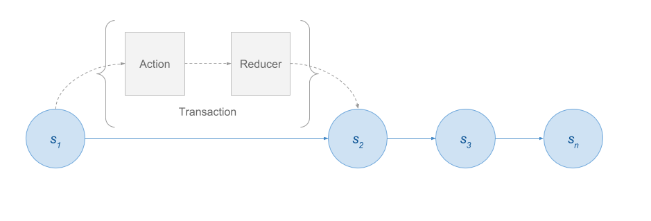

Redux with Angular
Adam Armourhttps://github.com/aarmour
Slides https://briebugconsulting.github.io/presentations/2017/02/redux-with-angular

You might not need Redux
or: use the right tool for the job
https://medium.com/@dan_abramov/you-might-not-need-redux-be46360cf367- It adds a layer of indirection that might not be necessary for a small app.
- There is a learning curve for developers who are not comfortable with functional programming.
Redux imposes the following constraints:
- Application state must be represented using plain objects and arrays.
- Changes in the system must be described using plain objects.
- Logic for handling changes to application state must be implemented as pure functions.

Flux
Architecture
Redux
Flux + Functional Programming
Benefits
- Deterministic state and view renders.
- Persist state and boot the app from it.
- Reproduce bug scenarios from serialized user actions and a state snapshot.
- Maintain an undo history. "Time travel" debugging.
- User workflows are complex.
- User workflows are disparate; e.g., regular users vs. administrators.
- The app uses WebSockets or server-sent events.
- View data comes from multiple sources.
Flux

Transactional state model
Actions
{
type: ADD_TODO,
text: 'Build my first Redux app'
}
A "record" of the state transaction.
Describes what happened.
The only source of information for the store.
Reducers
Actions describe the fact that something happened. They don't specify how the application's state changes in response. This is the job of reducers.

Reducers must be pure functions.
Reducers must not mutate state.

Reducers must not produce side effects.

Reducers must not call non-pure functions.
Store
Source of record for the application state.
"Smart" components
Also known as container components.
Concerned with how things work.
Listen to application state changes via the store.
Dispatch actions.
"Dumb" components
Also known as presentational components.
Concerned with how things look.
Are not dependent on the store.
Do not dispatch actions.
Async actions
{
type: FETCH_POSTS,
…
}

@ngrx
- @ngrx/store RxJS powered state management for Angular apps, inspired by Redux
- @ngrx/effects Side effect model for @ngrx/store
- @ngrx/store-devtools Instrumentation for @ngrx/store enabling time-travel debugging
- ngrx-store-freeze A @ngrx/store meta reducer that prevents state from being mutated
References
Comprehensive Introduction to @ngrx/store Brian Troncone
10 Tips for a Better Redux Architecture Eric Elliott